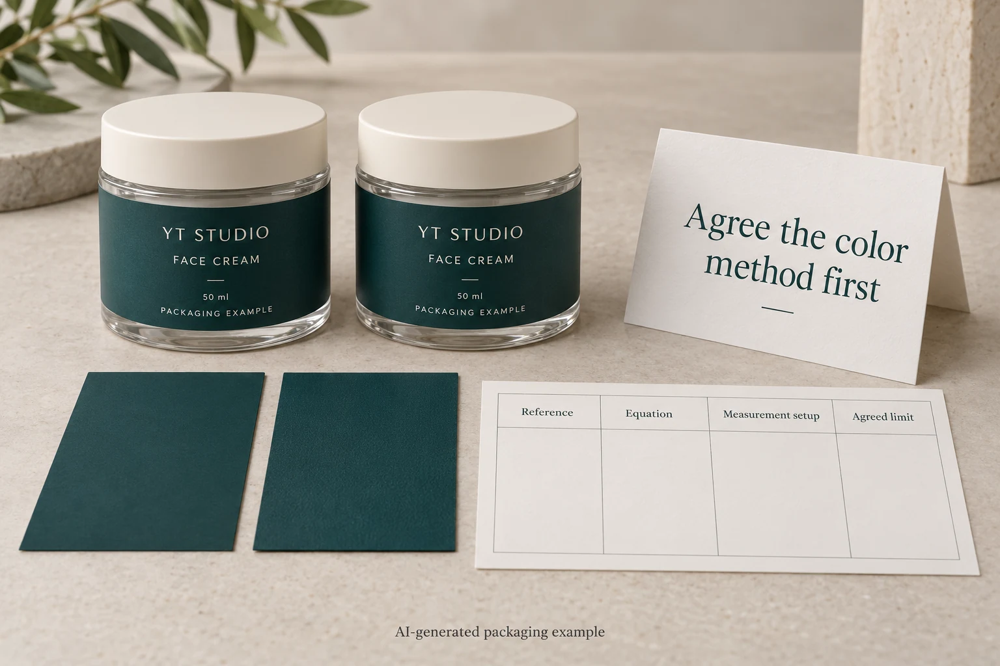
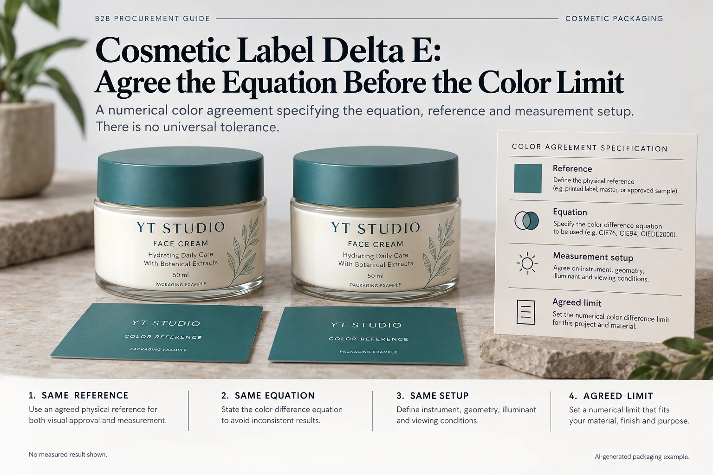

The bottle label and the approved reference look close, but two reports give different color-difference numbers. One uses Delta E 76 and the other Delta E 2000. Asking which report is right misses the purchasing problem: the team never agreed what the number in its acceptance requirement meant.
Agree the color-difference equation, reference and measurement conditions before setting a cosmetic-label Delta E limit. A number detached from those fields is not a complete color agreement. It cannot honestly be compared with every other value labeled Delta E.

The name of the equation belongs beside the limit
HunterLab distinguishes several color-difference equations, including CIE76, CIE94 and CIEDE2000. Their calculations differ. The bounded lesson for a label buyer is to identify the calculation used rather than treating the shared Delta E notation as a sufficient specification.
Do not convert an acceptance limit between equations with a convenient average multiplier. Ask the color specialist to agree the intended method and evaluate representative samples. A limit accepted under one specified arrangement should not quietly follow another equation into a new report.
This article supplies no universal numerical tolerance for cosmetic packaging. The appropriate agreement depends on the actual color task, construction, measurement and acceptable visual outcome. A tolerance copied from another printer's website may describe a different job.
Define which physical reference the calculation uses
Record whether the reference is an identified physical standard, an accepted production sample or another agreed target. Keep its revision, condition and storage history clear enough to locate the same reference later. A color name in an email does not identify an actual measured target.
Identify the sample being assessed as well. A raw printed swatch, a varnished label and a label viewed through a protective film may not be the same finished surface. If approval concerns the final construction, state how that construction is represented in the measurement and visual review.
Our color-matching guide covers the broader proofing conversation. Here the narrower purchase decision is whether two numerical statements use the same contract, not whether a screen color looks attractive.
Build a color-number agreement that can be checked
| Field | Required project reference | Do not assume |
|---|---|---|
| Target | Identified reference and revision | A color name alone fixes the target |
| Calculation | Named Delta E equation and relevant parameters | Different equations produce interchangeable values |
| Measurement | Agreed instrument arrangement, illuminant/observer and relevant settings | Any instrument display describes the same conditions |
| Sample presentation | Finished surface, backing, preparation and measurement locations | A raw swatch represents every assembled pack |
| Decision | Agreed limit, visual reference, exceptions and approver | A default software pass is the purchase agreement |
Ask the competent color-measurement party to complete the technical fields, including any setting relevant to its equipment and task. The buyer's role is to keep those fields attached to the quotation, sample report and release. Guessing instrument parameters does not make the comparison more rigorous.
Next check reports against that agreement. If the target, equation or setup differs, describe the mismatch and ask for a comparable assessment. Preserve the original report rather than relabeling its result. If the sample itself is no longer identifiable, another measurement may be necessary.

Keep the visual review attached to the numerical one
Arrange the visual comparison under conditions agreed for the packaging task. Tell reviewers which reference and finished sample they are judging. If reviewers and measurements disagree, investigate the mismatch rather than letting the more convenient result cancel the other without explanation.
A printed label can differ in gloss, texture or translucency as well as color. A single color-difference value does not necessarily describe every visible difference. Where gloss is part of the question, the gloss measurement guide addresses its separate geometry and reference.
Likewise, an accepted flat measurement does not show whether essential text stays readable over a dark filled bottle. Keep label color acceptance and the assembled pack's information task distinct. The release should state what each piece of evidence supports.
Choose a proportionate agreement for the project
A hypothetical presentation run may begin with a clearly identified physical appearance reference and a limited approval scope. It should not claim a numerical manufacturing tolerance that no one has agreed to assess.
A repeat program needing numerical reports has a reason to establish the method before quotations are compared. Both sides can then discuss whether the requested target and acceptance arrangement are supportable. A tighter-looking number is not automatically a better purchase if it describes another equation or unsupported setup.
Stop when the equation is unnamed, the physical reference cannot be located, the relevant settings are missing or the report does not represent the agreed construction. The next action is clarification with the color and production owners, not selecting the smallest reported value.
Send the color requirement as a complete reference
For cosmetic label printing, provide the artwork, named target reference, construction and finish, quantity by design, and any existing measurement agreement. Identify which color or visual issue still prevents approval.
The inquiry form prepares a message only. Send reference photographs, reports and files by email or WhatsApp. Ask what comparison and evidence can be proposed for the actual project before making a standalone Delta E number part of the purchase order.